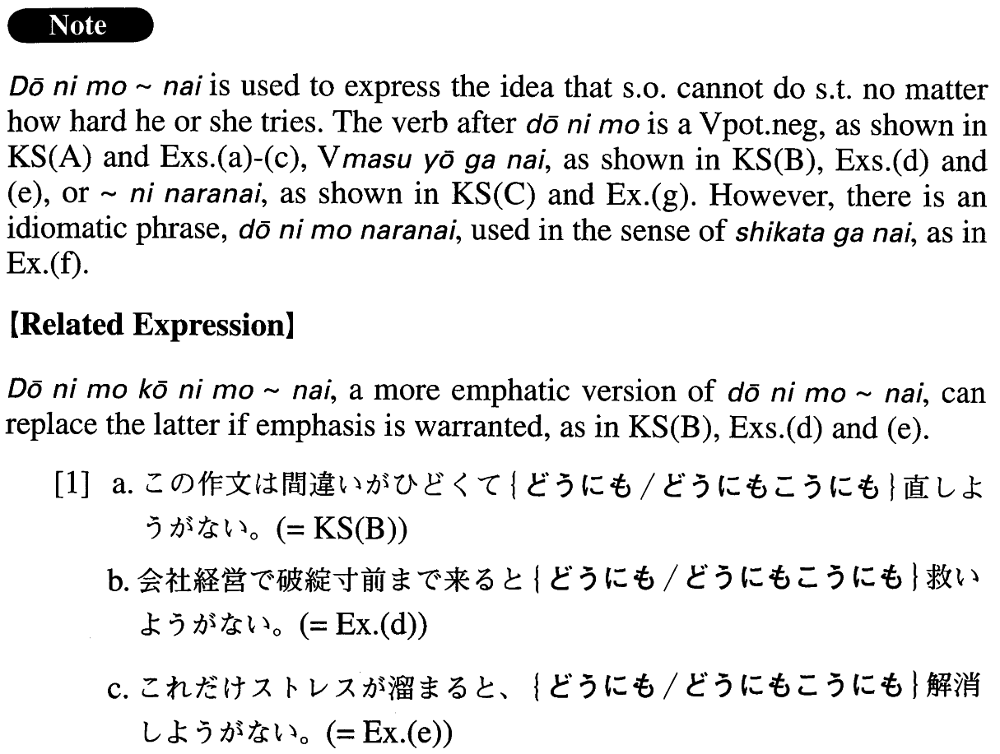

←
DoJG
→
どうにも～ない
(A. 92)
Example sentences
(ksa).
私には小説などは
どうにも書けない
。
I’d never be able to write something like a novel, no matter how hard I try.
(ksb).
この作文は間違いがひどくて
どうにも直しようがない
。
This composition has such awful mistakes that there is no way to fix it.
(ksc).
最近は携帯がないと
どうにも仕事にならない
。
Lately we can’t work without a cell phone.
(a).
この書類は印刷が悪くて
どうにも読めない
。
This document is printed so poorly, there’s no way we can read it.
(b).
あの人はあまりにも内気で
どうにも好きになれない
。
He is so introverted, I don’t think I’ll ever grow to like him.
(c).
人の悪口をかげで言うなどということは
どうにも許せない
。
I can’t possibly tolerate someone speaking ill of me behind my back.
(d).
会社経営で破綻寸前まで来ると
どうにも救いようがない
。
When a company’s management is on the verge of bankruptcy, there is no way to salvage it.
(e).
これだけストレスが溜まると、
どうにも解消しようがない
。
When stress piles up this much, there’s no way to relieve it.
(f).
バブル経済崩壊後の日本の経済の低迷ぶりはひどいものだけれど、
どうにもならない
。
The Japanese economic slump since the bubble economy burst is terrible, but there is no help for it.
(g).
色々お礼の言葉を書こうと思っていたのですが、
どうにも言葉になりません
。今まで本当にありがとうございました。
I was going to send you a thank-you note but I just couldn’t find the words to say what I meant. Thank you very much!
Formation
(i)
どうにも
Vpotential negative
ない
どうにも
話せ
ない
Can’t speak no matter how hard someone tries
(ii)
どうにも
Vます
ようが
ない
どうにも
食べようが
ない
There is no way to eat it
(iii)
どうにも
Noun
になら
ない
どうにも
勉強になら
ない
Can’t study at all
